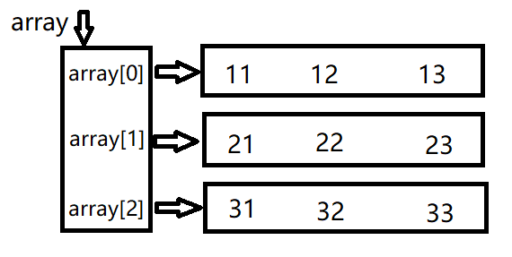

指针
基本概念
内存模型
x86架构系统运行时，先由内核程序将应用程序从磁盘加载到内存中，再由CPU与内存交互运行程序
CPU与内存是直接交互的，而与磁盘则需要通过程序操作磁盘控制器才可以实现交互

CPU通过内存地址对内存进行访问，内存地址长度一般来说与CPU位宽是相同的，即，对于32位CPU内存地址长度为32bit(4 bytes)，对于64位CPU内存地址长度为64bit(8 bytes)，一个内存地址可以寻址一个字节的空间，因此32位CPU可以寻址的内存大小为 2^32 bytes = 4GB
指针概念
指针是用于存储一个内存地址的结构，因此指针类型占用的空间大小对于不同位数的CPU是不同的
对于32位机指针类型有4 bytes，对于64位有8 bytes
基本语法
定义
xxxxxxxxxxint a;int *p = &a;*与&
*
*放在数据类型的描述中表示定义一个对应类型的指针，对于每种可以在内存中分配空间的数据类型都可以定义其指针（基本上除了enum以外的所有常见数据类型，struct结构体）
xxxxxxxxxxunsigned char *a; //定义一个指向unsigned char的指针unsigned long long *b; //定义一个指向unsigned long long的指针typedef struct _list_node //一个单链表节点的数据结构{ struct _list_node *next; //定义一个指向下一个单链表节点的指针 int num;} list_node;list_node *head; //因为struct声明使用了typedef //因此可以直接用list_node*定义一个指向list_node类型的指针*放在语句中表示取值，或称为解引用，即取一个指针变量对应的地址的值
xxxxxxxxxxint a = 3;int *p = &a; //定义一个指向a的指针(*p)++; //因为p是指向a的指针，所以*p即为a的值，或者从C的角度来讲取得的是a这个对象。(*p)++即a++&
&表示取一个对象的地址，或称为引用
例1
xxxxxxxxxx// 比如这里想实现对int a这个对象的引用int a = 3;int *p = &a;(*p)++; // p的值为&a，要取得a对象则调用*p // a = 4int **pp = &p; // 定义一个二重指针，即指向指针的指针(**pp)++; // 因为pp=&p 因此*pp=p，因此**pp=a // a = 5与数组的关系
数组可以视为一段连续的内存空间，如int array[10]; 即分配了一段 10*sizeof(int) 的内存空间给程序
C语言中，数组名其实是一个指向数组第一个元素的指针
xxxxxxxxxxint array[10];int *p = &array[0];printf("array:%p p:%p\n", array, p);输出：
xxxxxxxxxxarray:0060FEF4 p:0060FEF4
因此可以通过数据类型相同的指针对数组元素进行访问
例2
xxxxxxxxxxint array[10];int *p = array;for(int i=0; i<10; i++){ *(p+i) = i;} //将array赋值为0~9此外*(p+i)可以用p[i]代替
进阶
指针的加法
一个例子
例3
xxxxxxxxxx char a; char *pa = &a; int b; int *pb = &b; long long c; long long *pc = &c; struct test { int mem1; int mem2; } d; struct test *pd = &d; printf("pa:%p pa+1:%p\n", pa, pa+1); printf("pb:%p pb+1:%p\n", pb, pb+1); printf("pc:%p pc+1:%p\n", pc, pc+1); printf("pd:%p pd+1:%p\n", pd, pd+1);输出
xxxxxxxxxxpa:0060FF0F pa+1:0060FF10pb:0060FF08 pb+1:0060FF0Cpc:0060FF00 pc+1:0060FF08pd:0060FEF8 pd+1:0060FF00
可以发现pa+1后地址与原来地址相差为1，但pb差值为4，pc差值为8，pd差值为8
也就是说指针的加法运算，实际上单位是该指针指向的数据类型的字节数，即
xxxxxxxxxxlong long *aa + 1 ==> a + sizeof(long long)a + n ==> a + n * sizeof(long long)
为什么
再看一段程序
xxxxxxxxxxint array[5]for(int i=0; i<5; i++) printf("%p\n",&array[i]);输出
xxxxxxxxxx0060FF080060FF0C0060FF100060FF140060FF18
这段输出很好理解，因为array的元素是int型，所以每个元素占用空间是4字节
那么结合起来想想应该能理解为什么指针每次加的数值实际是sizeof(指针类型)
为了加深理解，可以看接下来这个例子
例4
xxxxxxxxxxunsigned int array[2] = {0x12345678, 0xabcdef66};unsigned int *pa = array;char *pb = array; //这里会报指针类型不匹配的warning，要消除可以将array改为(char*)arrayfor(int i=0; i<2; i++) printf("%x\n", pa[i]);for(int i=0; i<8; i++) printf("%x\n", pb[i]);输出
xxxxxxxxxx12345678abcdef667856341266ffffffefffffffcdffffffab
可以看出使用char*访问相同的数据时，char*每次只会访问一个字节的数据
至于为什么数字的顺序是倒着的，可以查下小端序大端序
至于最后为什么前面有很多ff，因为这里采用的指针是char*，即pb[i]被当做一个char型变量，对于char型变量，0xef 0xcd 0xab都是负数，当用格式化字符串%x调用printf时会先将char型转换为int型，因此会有一堆ff，表示其是个负数（负数为什么会有一堆ff请查补码的相关知识）。要消除这些ff可以将char*改为unsigned char*
二维数组
二维数组的逻辑结构
现在先假设我们有如下的定义
xxxxxxxxxxint array[3][3] = { {11,12,13},{21,22,23},{31,32,33} };int *p[3] = array; // 注意这里的定义是int *p[3]，需要指定数组的第二个维度我们可以方便地通过p[m][n]使用array中的元素
那么应该怎么用p+偏移量的方式使用呢
答案是 *( *(p+m) + n )
如何理解？看下图

也就是说，实际上array指向一个指针数组，而指针数组又各自指向了一个一维数组，以此组成一个二维数组，这是C语言中二维数组的逻辑结构
回头来理解上面的代码，*(p+m)实际上取了array[m]的值，这个值指向array[m][]这个一维数组，因此*(p+m)+n指向了array[m][n]，最后*( *(p+m) + n )即为array[m][n]
二维数组的实际结构
但在实际中，内存空间是一维的，而如果为每个二维数组都创建一个指针数组未免过于复杂，因此实际上内存布局如下

为了验证可以看看下面的代码
例5-1
xxxxxxxxxxprintf("array:%p\n", array);for(int i=0; i<3; i++) printf("array[%d]:%p\n", i, array[i]);for(int i=0; i<3; i++) for(int j=0; j<3; j++) printf("&array[%d][%d]:%p\n", i, j, &array[i][j]);输出
xxxxxxxxxxarray:0060FEECarray[0]:0060FEECarray[1]:0060FEF8array[2]:0060FF04&array[0][0]:0060FEEC&array[0][1]:0060FEF0&array[0][2]:0060FEF4&array[1][0]:0060FEF8&array[1][1]:0060FEFC&array[1][2]:0060FF00&array[2][0]:0060FF04&array[2][1]:0060FF08&array[2][2]:0060FF0C
题外话：因此其实也可以用如下代码访问array所有元素，想想为什么
xxxxxxxxxxint *p2 = array;for(int i=0; i<9; i++) printf("array[%d][%d]:%d\n", i/3, i%3, p2[i]);深入思考*p[n]
现在回过头来想想为什么定义一个指向array[m][n]的指针必须定义为*p[n]而不能是**p
这里可以用到之前指针的加法，看看*p[n]与**p的区别
xxxxxxxxxxint **pp = array;printf("pp:%p pp+1:%p\n", p2, p2+1);printf("p:%p p+1:%p\n", p, p+1);输出
xxxxxxxxxxpp:0060FEE0 pp+1:0060FEE4p:0060FEE0 p+1:0060FEEC
可以看到，**p的自增单位为sizeof(int)，而*p[3]的自增单位为3*sizeof(int)
多维数组
一样，👴就不说了
注意多维数组array[m][n][x][y][z]的指针定义为*p[n][x][y][z]，自增单位为n*x*y*z* sizeof(type)
其他指针
结构体指针
结构体的内存对齐
结构体老生常谈的问题就是所谓的内存对齐，见下例的结构体
xxxxxxxxxxtypedef struct _test{ int a; char b; long long c; char d;} test;可以看一下各成员的内存地址
xxxxxxxxxxtest mytest;printf("test addr: %p\n", &mytest);printf("test.a addr: %p\n", &mytest->a);printf("test.b addr: %p\n", &mytest->b);printf("test.c addr: %p\n", &mytest->c);printf("test.d addr: %p\n", &mytest->d);printf("next test addr: %p\n", &mytest[1]);在我的机子上结果如下
xxxxxxxxxxtest addr: 000000000061FE00test.a addr: 000000000061FE00test.b addr: 000000000061FE04test.c addr: 000000000061FE08test.d addr: 000000000061FE10next test addr: 000000000061FE18sizeof test : 18
可以看到，对于b和d两个char型成员，虽然char型数据只占1字节，但由于编译器的默认对齐为4字节，因此b实际占了4字节；而有趣的是，d占了整整8个字节。这似乎是因为gcc在进行结构体间的对齐时，会根据结构体中最长的成员来对齐。见下面例子（code/struct_1.c）：
xxxxxxxxxxtypedef struct _test2{ long long a; char b;} test2;typedef struct _test3{ int a; int b; char c;} test3;这两个结构体在我的编译器中的大小分别是 0x10 和 0xC（尝试了gcc和msvc）
pragma pack
从上面的例子可以看出，程序员很多时候并无法正确预测结构体的内存对齐方式，那有没有办法对内存对齐进行手动控制呢
见下例（code/struct_2.c）
xxxxxxxxxx// 将原有的内存对齐压入栈，并定义新的内存对齐长度（这里为1）typedef struct _test{ int a; char b; long long c; char d;} test;// 将之前的内存对齐出栈这里使用pragma宏将默认的结构体内存对齐设置成1字节。注意这里有一对入栈出栈的操作。
各成员的内存地址如下：
xxxxxxxxxxtest addr: 000000000061FE0Atest.a addr: 000000000061FE0Atest.b addr: 000000000061FE0Etest.c addr: 000000000061FE0Ftest.d addr: 000000000061FE17next test addr: 000000000061FE18sizeof test : e
可以看到，这里结构体的长度严格等于 4+1+8+1=14，也就是说没有任何因程序对齐需要浪费的空间
结构体的常见用法
特性
先来看一个有趣的例子 code/struct_3.c
首先定义结构体如下
xxxxxxxxxxtypedef struct _test{ unsigned char lo; unsigned char mid_1; unsigned char mid_2; unsigned char hi;} test;主程序为
xxxxxxxxxxunsigned int a = 0xdeadbeef;test* p = &a; // 这里直接将一个结构体指针指向这个unsigned intprintf("a: %X\n", a);printf("p->lo: %X\n", p->lo);printf("p->mid_1: %X\n", p->mid_1);printf("p->mid_2: %X\n", p->mid_2);printf("p->hi: %X\n", p->hi);结果为
xxxxxxxxxxa: DEADBEEFp->lo: EFp->mid_1: BEp->mid_2: ADp->hi: DE
可以看到，test的每个成员都对应了unsigned int上的每个字节，也就是说可以用这种方式来以不同的格式解析一段内存的内容
当然，在实际编程中应该尽量避免上述这种 指针乱指 的行为，所以一般可以结合union来实现 code/struct_4.c
xxxxxxxxxxtypedef union _data { unsigned int num; test all_bytes;} data;使用这种方法进行赋值
xxxxxxxxxx data a; a.num = 0xdeadbeef; printf("a.num: %X\n", a.num); printf("a.all_bytes.lo: %X\n", a.all_bytes.lo); printf("a.all_bytes.mid_1: %X\n", a.all_bytes.mid_1); printf("a.all_bytes.mid_2: %X\n", a.all_bytes.mid_2); printf("a.all_bytes.hi: %X\n", a.all_bytes.hi);结果与上个程序相同
xxxxxxxxxxa.num: DEADBEEFa.all_bytes.lo: EFa.all_bytes.mid_1: BEa.all_bytes.mid_2: ADa.all_bytes.hi: DE
位域
使用位域可以对结构体的内存进行更精准的控制，位域可以指定结构体上每个成员对应多少个二进制位。
见下例 code/bitfield.c
结构体：
xxxxxxxxxxtypedef struct _test{ unsigned char byte0_lo_3: 3; unsigned char byte0_mid_2: 2; unsigned char byte0_hi_3: 3; unsigned char byte1_lo_4: 4; unsigned char byte1_hi_4: 4;} test;程序：
xxxxxxxxxxprintf("sizeof test: %X\n", sizeof(test));printf("a.all_bytes.byte0_lo_3: %X\n", a.all_bytes.byte0_lo_3);printf("a.all_bytes.byte0_mid_2: %X\n", a.all_bytes.byte0_mid_2);printf("a.all_bytes.byte0_hi_3: %X\n", a.all_bytes.byte0_hi_3);printf("a.all_bytes.byte1_lo_4: %X\n", a.all_bytes.byte1_lo_4);printf("a.all_bytes.byte1_hi_4: %X\n", a.all_bytes.byte1_hi_4);结果如下：
xxxxxxxxxxsizeof test: 2a.all_bytes.byte0_lo_3: 7a.all_bytes.byte0_mid_2: 1a.all_bytes.byte0_hi_3: 7a.all_bytes.byte1_lo_4: Ea.all_bytes.byte1_hi_4: B
文件/协议解析
结构体在程序中最常见的用途之一就是文件、协议的解析。众所周知，大多数文件和协议都是由多个不同的部分组成的，如PE文件有文件头，TCP协议有报文头。在解析时最常用的方法就是在内存中读入一段文件或协议的内容，再将一个结构体指针指向其对应的位置
code/header.c 展示了一个读取PE头/ELF头的程序
获取偏移量的奇技淫巧
在实际编程中，有时候需要知道结构体的某个成员的相对偏移，一般采用下面这个宏
xxxxxxxxxx还有多种类似的写法，不过原理是一样的。
s是结构体的类型，m是成员名。这个宏的原理就是将NULL指针，也就是地址为0的指针转换为该结构体的指针，此后使用该指针来计算成员的地址。由于成员的地址是结构体指针地址+成员偏移，而这里的结构体指针地址为0，因此可以得到成员偏移